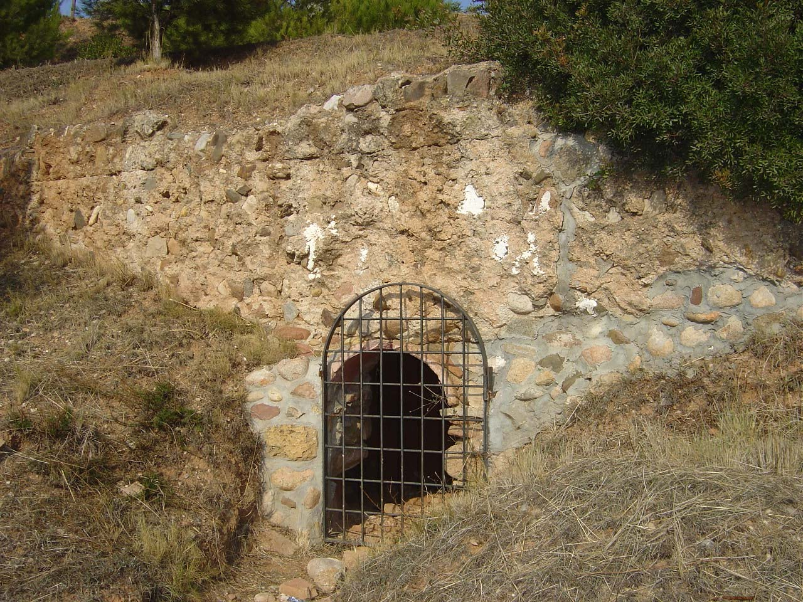
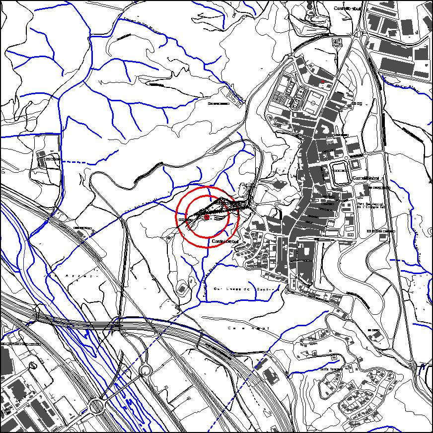

|  |  |
Nom de l’element: Restes de basses d’aigua
Clau d’identificació: D.11
Nucli o indret: Entorn de l’ermita de Sant Vicenç
UTM: X= 414.486, Y= 4.592.109
Règim del sòl: sòl no urbanitzable.
1.1. Època de construcció i tipologia:
Murs de pedra i una petit habitacle de pedra. Hi ha les restes d’unes basses d’aigua amb origen d’algun procés industrial. Pendent d’aportació de dades de la campanya arqueològica que s’està duent a terme.
1.2. Estat de conservació:
Bo.
1.3. Ús actual:
Històric-cultural (jaciment arqueològic).
1.4. Accés:
Accés fàcil des del camí cap a l’ermita de Sant Vicenç.
Patrimoni històric local, pendent de catalogar.
3.1. Usos admesos:
Espais lliures, recreatiu cultural
3.2. Condicions d’ordenació:
Segons Pla Especial a redactarr.
3.3. Accés i serveis:
Des del camí cap a l’ermita de Sant Vicenç
BPU (Bé Protegit Urbanísticament)